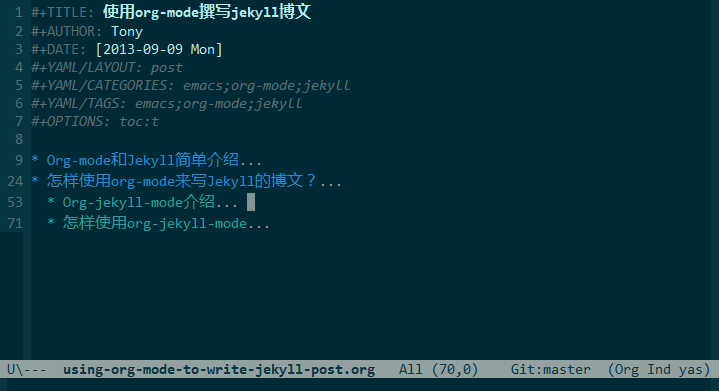

使用org-mode撰写jekyll博客
Table of Contents
Org-mode和Jekyll简单介绍
Org-mode 是什么？
Org-mode是Emacs编辑器上一个基于文本的、快速且高效的文档编辑模式。支持内容分级显示的编辑模式，同时支持强大的TODO列表，日志管理，做笔记或者写工程计划等。关于org-mode,本文不做过多的说明。具体可以参见官方的详细文档org-mode.
Jekyll 是什么？
Jekyll是一个采用Ruby编写的, 简单的、面向博客的静态网站生成工具。它能够将一系列文本文件（Markdown和Textile）转换成一个完整的，可以发布的静态页面。大名鼎鼎的代码托管商Github的Github pages就是采用的Jekyll做引擎。也就意味着，你可以免费使用Github的服务器来搭建属于你自己的项目WIKI，博客或者是网站等。关于Jekyll的详细使用，请参考官方文档Jekyll.
怎样使用org-mode来写Jekyll的博文？
Jekyll博客本身是不支持对org-mode的文件进行转换的，不过我们通过将 org-mode文件发布成html之后，将其扔到jekyll博客的 _posts 目录下，其就可以进行处理了。org-mode支持将org-mode文件转换成多种格式的文档的，如：latex，pdf，html等等。
如果只是简单的将org-mode文件转成html之后，放到Jekyll的posts目录下，那样或多 或少会出现一些问题， 比如，我们发现我们自己定义的一些样式根本就没在这个文件里面。当然，解决的办法也很简单，我们只需要编写一个简单的project-alist，来指定其不导出某些内容即可，如下是一个简单的org-publish-project-alist:
(setq org-publish-project alist '(("test-base" :body-only t :base-directory "your org-mode file root directory" :publishing-directory "your jekyll project _post directory path"))
我们在发布当前文件的时候，只需要选择项目test-base即可。这样导出的文件就只会包含 html文件的body部分，并不会包含头信息等。关于详细的project-alist的编写规则，请参考 org-mode官方文档.
当然，这样导出之后还没完，我们还没给我们的文件添加属于Jekyll的yaml-front-matter呢？这时打开导出之后的文件，在其首部添加上你需要的信息即可。虽说这样能够解决org-mode导出到jekyll博客的问题，但是过多的手工操作需要我们去做。作为一名码农，这是绝对无法忍受的。所以就诞生了这么一个工具 org-jeky-mode.该项目是开源项目，代码托管到Github上，详细请戳这里.
本文就是完全采用org-mode编写的，来一张截图:

Org-jekyll-mode介绍
org-jekyll-mode是一个emacs的插件，能够帮助用户使用org-mode来编写jekyll 的博客文章, 使用org-jekyll-mode既可以快速创建类似jekyll博客文章命名格式的 org-mode文件，也能够创建一个文件名不带时间前缀的文件。同时， org-jekyll-mode能够将最终导出的文件格式化成标准的jekyll博客文章格式。如： 如果你创建的org-mode文件的文件名是不带时间戳前缀的，那么 org-jekyll-mode在导出最终的html文件之后，会在输出文件的文件名之前加上时间戳，如果你在org-mode-file中设定了 #+DATE: 选项，那么最终导出文件的时间戳则会以这个值为准，否则就采用当前时间。同时，org-jekyll-mode也可以直接在org-mode文件中控制最终导出文件的yaml font matter。目前，包含了所有jekyll支持的yaml front matter keywords。 不过，如果需要在 org-mode文件中使用的话，这些关键字前面都需要加上 #+YAML/ 前缀。同时， keyword最好大写。
org-jekyll-mode本身是一个单独的插件，其在运行时是需要依赖org相关的包的，当然，目前对 org-mode版本的最低要求是8.0. 因为org-mode 8.0版本相对于以前的有很多API的更改，本人又刚好使用的是8.0+的版本，所以就没有对以前的版本做兼容处理。
怎样使用org-jekyll-mode
org-jekyll-mode使用非常简单，只需要将其最新的代码克隆到本机，在你的emacs初始化文件里面添加如下代码即可:
(add-to-list 'load-path "your-org-jekyll-mode-root") (require 'org-jekyll-mode) (setq org-jekyll/jekyll-project-root "your-jekyll-root") (setq org-jekyll/org-mode-project-root "your-org-mode-project-root")
在使用org-jekyll-mode之前，你必须要先定义一些变量的值:
org-jekyll/jekyll-project-root
这个变量指定了你的jekyll项目的根目录。因为org-jekyll-mode会根据这个路径，将其文件发布到这个目录的相应子目录下。
org-jekyll/org-mode-project-root
该变量指定了你的org-mode文件存放的目录。一般我喜欢将我的文件放在一个单独的网盘里面，这样方便管理和随时查看。
org-jekyll/org-mode-static-files-folder-name
这个变量指定了你在org-mode项目目录下，用于存放静态文件，如：图片、css等文件的目录名。默认是你的org-mode项目的根目录。我个人比较喜欢将其放在一个叫assets的目录下。所以我的 org-mode 项目目录结构:
-Notes --assets ----img ----css *.org
关于更多的介绍，请参见项目WIKI。
发布当前文件
在文件编辑完毕之后，我们只需要执行 M-x org-jekyll/publish-project 就可以发布当前文件了.
org-jekyll-mode中定义的快捷键
[C-c C-n] 创建一个新的org-mode文件，但是其文件名并不会带上时间戳。如果需要将在某一个子目录下创建该文件，只需要在目录名和文件名之间使用斜杠分开即可，如：2013/hello-world 就会在org-mode-project-root下，如果没有 2013目录，则创建，否则在2013目录下创建hello-world.org文件.
[C-c C-d] 功能跟 C-c C-d 一样，不过这个快捷键创建的文件会带上时间戳，也就是标准的jekyll post文件名格式。
[C-c C-p] 发布当前文件